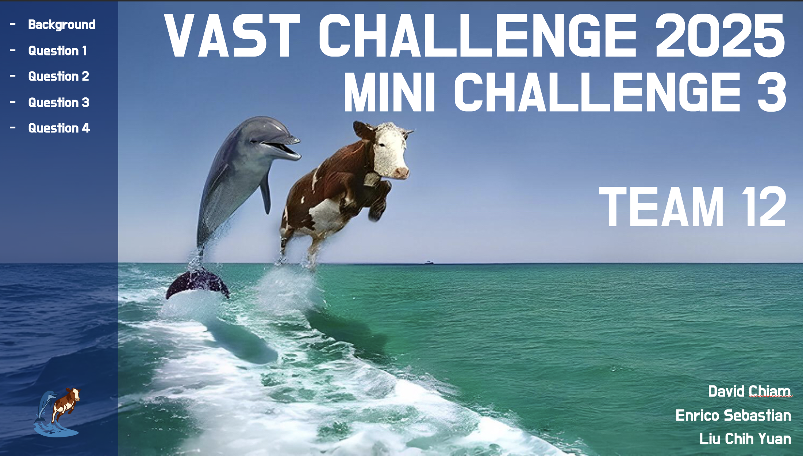
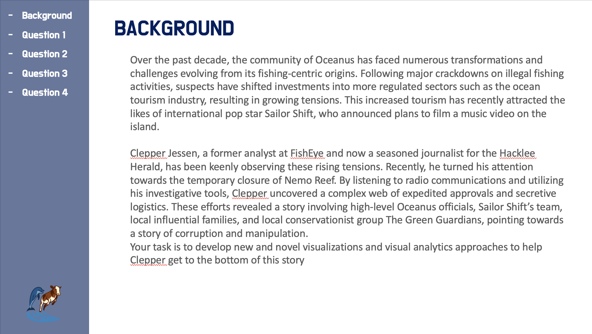
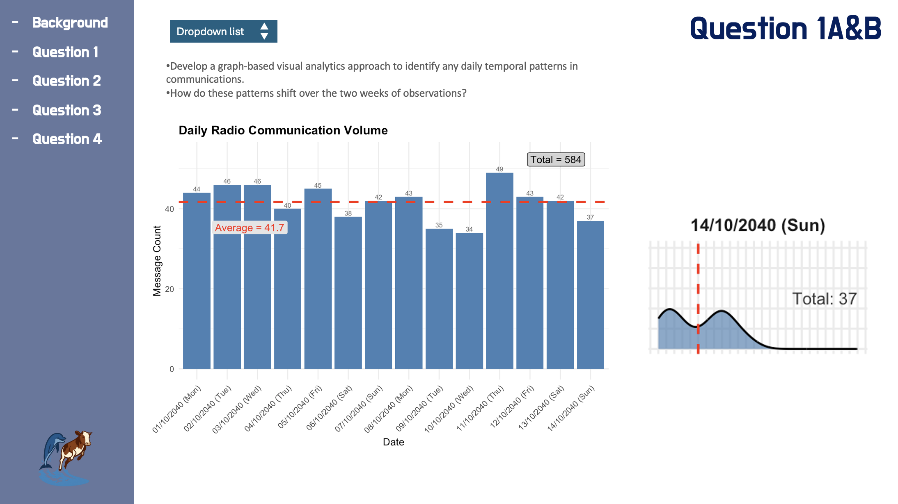
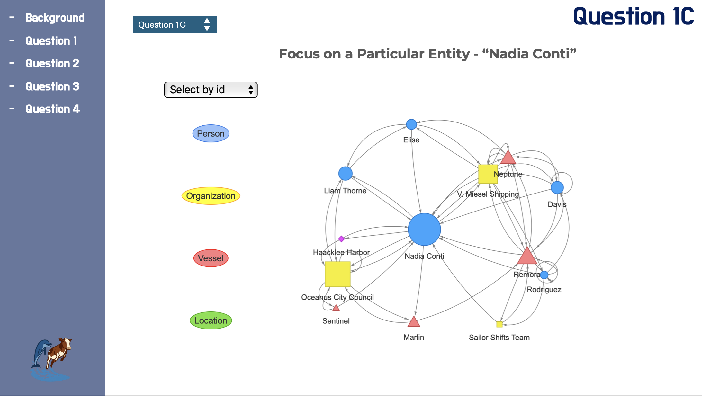
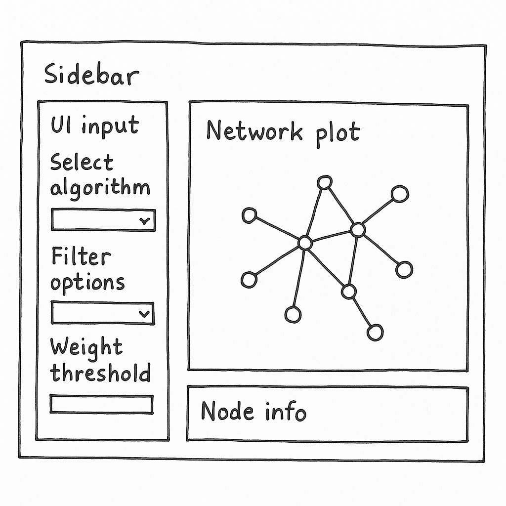

Code
library(tidygraph)
library(ggraph)
library(jsonlite)
library(dplyr)Lui Chih Yuan, David Chiam, Enrico Sebastian
June 8, 2025
June 21, 2025
In this take-home exercise, you are required to select one of the module of your proposed Shiny application and complete the following tasks:
This prototype module is part of a larger visual analytics application for Mini-Challenge 3 (VAST Challenge 2025). It supports investigative journalist Clepper Jessen in uncovering hidden relationships and pseudonymous communication patterns within the radio transcript dataset of Oceanus.
The goal of this prototype is to storyboard and test a modular component that will eventually be integrated into the full Shiny application. The focus is on community detection and interactive pseudonym analysis, providing users with the ability to dynamically explore clusters of entities based on radio communication activity.
This document outlines the prototyping process, from data wrangling and method selection, to interactive interface design using Shiny components. The storyboard describes how different visual and interactive elements will work together to support investigative insights.
The source data is a knowledge graph in JSON format (MC3_graph.json) provided in the VAST Challenge 2025 Mini-Challenge 3. It consists of two primary components:
The following R packages were used for data wrangling:
The steps to prepare the data are as follows:
Step 1: Load and Parse the JSON File
# Load the knowledge graph json_graph <- jsonlite::read_json("data/MC3_graph.json")Step 2: Extract and Structure Nodes and Edges
# Convert to tibble format nodes_tbl <- as_tibble(json_graph$nodes) edges_tbl <- as_tibble(json_graph$links) # Rename and structure columns for compatibility nodes_tbl <- nodes_tbl %>% rename(id = id, label = name, type = entity_type) edges_tbl <- edges_tbl %>% rename(from = source, to = target)Step 3: Convert to a Tidygraph Object
graph_data <- tbl_graph(nodes = nodes_tbl, edges = edges_tbl, directed = TRUE)Step 4: Clean and Enrich the Graph
# Filter out edges with low weights or irrelevant connections (e.g., self-loops) graph_data <- graph_data %>% activate(edges) %>% filter(!is.na(from), !is.na(to)) %>% filter(weight > 1) %>% activate(nodes) %>% mutate(degree = centrality_degree())Step 5: Verify Graph Summary
summary(graph_data)These steps ensure that the data is converted into a tidy, filterable, and graph-compatible structure for community detection and interactive visualisation.
The core data transformation principles applied include:
This module employs a dual-pronged analytical strategy that combines community detection algorithms with exploratory network visualization. These techniques allow the investigator to detect tightly linked communication subgroups, potentially exposing pseudonym clusters or coordinated behavior among vessels and individuals.
We adopted two widely recognized algorithms for graph community detection:
Both algorithms produce numeric cluster IDs for each node, which are then used for node coloring and group-based filtering in the visual layer.
Visualisation is a central element in this prototype, serving both as an exploratory and explanatory tool. Two main techniques were employed:
ggraph: These are helpful during the analytical phase for layout calibration, edge density verification, and debugging of network transformations.visNetwork: These are deployed in the Shiny UI to support user-driven exploration. visNetwork provides pan, zoom, hover, and click functionality, which enhances pattern recognition and contextual analysis.Color schemes were intentionally chosen to reflect community membership (via cluster ID), and node sizing was mapped to degree centrality to emphasize influence or activity within the graph.
Additional enhancements include:
ggraph for initial exploration.visNetwork for drilldown, tooltips, and filtering.This section emphasizes key prototyping principles outlined in the exercise brief:
Evaluation of R Packages from CRAN: The prototype uses CRAN-supported packages such as shiny, visNetwork, tidygraph, ggraph, igraph, jsonlite, dplyr, and DT, all verified as stable and production-ready. This ensures compatibility and reduces technical risk when scaling the full Shiny application.
Validation of Functional Code: All prototype components will be individually tested using RStudio. The pre-processing logic and community detection methods seek to ensure that it return correct outputs, and the visual network plot reacts dynamically to filtered inputs. Each Shiny UI input will be tied to a reactive server-side operation, tested both in isolation and in the Shiny runtime environment.
Definition of Inputs and Outputs: Inputs include dropdowns for algorithm selection, checkboxes for entity filtering, and sliders for edge weight thresholds. Outputs include an interactive visNetwork graph, node information text display, and (optionally) an exportable snapshot. This alignment ensures clarity for both developers and users.
Shiny UI Component Selection: Interface components are chosen to balance functionality and user experience:
selectInput() offers a clear choice between Louvain and Walktrap algorithms.
checkboxGroupInput() allows entity-specific filtering for targeted analysis.
sliderInput() provides intuitive numeric filtering for graph density.
visNetworkOutput() renders an interactive and scalable network layout.
verbatimTextOutput() reveals node metadata for contextual interpretation.
These choices follow principles showcased in leading prototypes (e.g., Decoding Chaos and Tanzania Tourism), focusing on minimal cognitive load, fast responsiveness, and user-guided discovery.
To ensure clarity and usability, this module is designed using a storyboard-driven approach, inspired by best practices observed in exemplary prototype pages such as those from Decoding Chaos and Tanzania Tourism Analysis.
Drawing inspiration from these references:
To inform the visual language and layout of the Shiny application, our team designed a prototype landing page comprising several interlinked interface sections. These visuals illustrate the envisioned user interface and serve as references for component development.
This mock-up establishes the visual identity and thematic branding for the dashboard. It reflects both the investigative tone of the VAST Challenge and our team’s creative approach. It includes a left navigation menu that guides users to each of the core question modules (Q1 to Q4), providing a consistent sidebar layout throughout the app.


This section visualizes message frequency over time to detect periodicity or anomalies. It includes:
This template serves as a reference for time-series visualizations to be integrated in future timeline-driven modules of the application.

This visual emphasizes network centrality and ego relationships. It includes:
This model informed the modular network layout used in our prototype for community and pseudonym analysis.

This low-fidelity layout demonstrates the foundational module structure:
It serves as the core layout pattern for the Shiny UI development, supporting Louvain/Walktrap switching, entity filters, and network interactivity.

The storyboard sketch and mock-ups reinforce a consistent modular layout adopted across the Shiny application. Each view uses a sidebar-main panel split, empowering users to choose algorithm types and entity filters on the left and observe dynamic network results on the right.
Below is a simplified Shiny layout using fluidPage() to map this structure:
#|code-fold: False
ui <- fluidPage(
titlePanel("Community Detection & Pseudonym Explorer"),
sidebarLayout(
sidebarPanel(
selectInput("algo", "Community Detection Algorithm", choices = c("Louvain", "Walktrap")),
checkboxGroupInput("type", "Entity Types", choices = c("Person", "Vessel", "Place")),
sliderInput("weight", "Minimum Edge Weight", min = 1, max = 10, value = 2)
),
mainPanel(
visNetworkOutput("net", height = "600px"),
verbatimTextOutput("info")
)
)
)This structure ensures responsiveness, clarity, and user engagement. The design accommodates future expansion while maintaining a low learning curve. Screenshots from earlier dashboard questions, such as the bar chart in Q1A&B and the entity-focused network of Q1C, served as design blueprints to guide the final implementation.
In addition to interactive graph exploration, this Shiny application supports tabulated results presented using the DT package. This enhances user control and discoverability when inspecting detailed data outputs such as entity centrality, community membership, or alias metadata.
Using DT::datatable(), users can:
This supports investigation workflows such as:
By embedding this alongside the network graph, the application delivers both relational context and tabulated drilldown capabilities, bridging visual insight with attribute-level data access.
| UI Component | Purpose |
|---|---|
selectInput("algo") |
Choose detection algorithm (Louvain/Walktrap) |
checkboxGroupInput("type") |
Filter node types (person, vessel, place) |
sliderInput("weight") |
Filter connections below weight threshold |
visNetworkOutput("net") |
Display interactive graph |
verbatimTextOutput("info") |
Node metadata panel |
Design Learnings from References
To make the Shiny application more engaging and insightful, we expand beyond core filters and outputs to include a wider array of interactive features.
| Input Control | Description |
selectInput("algo") |
Community detection method selector (Louvain or Walktrap) |
checkboxGroupInput("type") |
Entity type filter (Person, Vessel, Place) |
sliderInput("weight") |
Minimum edge weight threshold to reduce noise |
selectInput("focus_entity") |
Focus on a particular entity (e.g., Nadia Conti) to show ego network |
checkboxInput("highlight_alias") |
Toggle to highlight entities suspected of pseudonym usage |
dateRangeInput("comm_range") |
Select time window to filter communication edges |
selectInput("cluster_id") |
Filter or highlight a specific cluster based on detection algorithm |
| Output Component | Description |
visNetworkOutput("net") |
Interactive network showing colored clusters and filtered edges |
verbatimTextOutput("info") |
Metadata of selected node (e.g., name, type, degree) |
plotOutput("timeline_plot") |
Communication volume over time (to be integrated) |
DTOutput("result_table") |
Tabular view of nodes or edges with filtering and sorting features |
downloadButton("export_plot") |
Export current network view as image or snapshot |
textOutput("cluster_summary") |
Summary statistics for selected community cluster |
These enhancements not only add usability and depth, but also align tightly with the investigative workflow Clepper is likely to pursue — identifying leads, tracking influence, and exposing deceptive practices over time.
This Take-home 3 prototype marks a successful first implementation of a modular Shiny component tailored for investigative visual analytics. It showcases the power of combining community detection algorithms, interactive network diagrams, and dynamic filtering interfaces to surface hidden communication patterns and pseudonym dynamics in a complex dataset.
Key strengths of this prototype include:
This prototype also reflects lessons learned from top-performing prior projects (e.g., Decoding Chaos, Tanzania Tourism) in terms of storyboarding, modular UI planning, and interaction design.
To scale this prototype into a full-featured module within the final application, the following development goals are recommended:
dateRangeInput().With these enhancements, the application can evolve into a powerful and intuitive investigative platform — revealing who is connected, how they communicate, and which identities may be intentionally obscured.